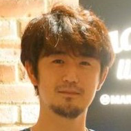
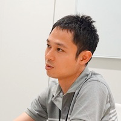

運営
実行委員

及川 卓也
Tably株式会社
代表取締役 Technology Enabler

関 満徳
グロース・アーキテクチャ＆チームス株式会社
プロダクトオーナー支援スペシャリスト
田中 正巳
株式会社ビズリーチ
スクラムマスター

丹野 瑞紀
株式会社メルペイ
プロダクトマネージャー
東峰 裕之
クラスター株式会社
デザイナー
鳴釜 優子
パーソルイノベーション株式会社
プロデューサー

三浦 伸明
笑屋株式会社
VPoE
山本 浩之
株式会社メジャース
代表取締役社長

横道 稔
LINE株式会社
アジャイルコーチ
運営メンバー

大倉 悠輝
株式会社カオナビ
プロダクトマネージャー
小城 久美子
Tably株式会社
佐藤 翔
Inedo Japan
マーケティングマネージャー
久津 佑介
株式会社CAMPFIRE
プロダクトマネージャー
三木 創一郎
株式会社タイムチケット
CTO
横井 啓介
株式会社フライウィール
プロダクトマネージャー
お問い合わせ
プロダクトマネージャーカンファレンス運営事務局